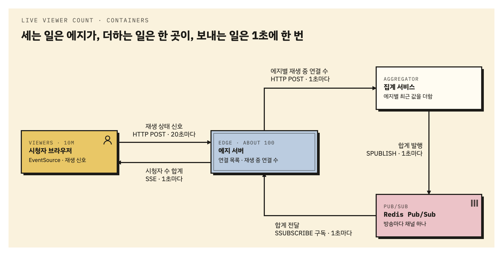
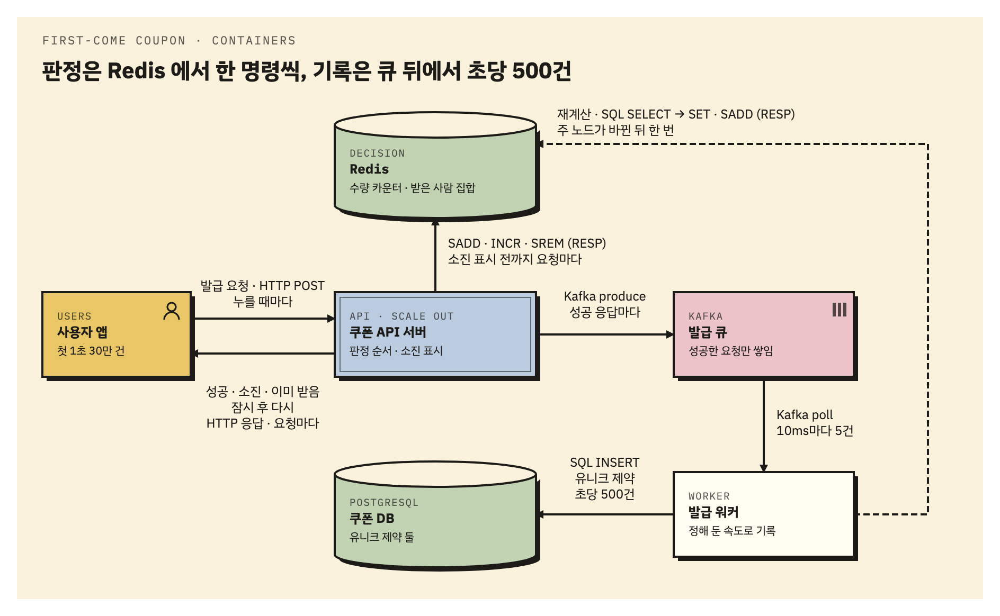

이 화면에서 하는 일
.review.md)에 직접 적지 않습니다. 정본에 없는 줄이라 다음 발행이 거부하고, 다시 뽑으면 사라집니다.터미널로 할 때 · 번호 대신 주제의 문구 일부도 받습니다
python3 scripts/kanban.py review-judge <project-root> --card KAN-002.2-4E05GD --item <번호> --verdict 승인 python3 scripts/kanban.py review-note <project-root> --card KAN-002.2-4E05GD --item <번호> --text "<추가 의견>" python3 scripts/kanban.py review-item <project-root> --card KAN-002.2-4E05GD --add "<새 주제> <상세>"
파일럿 두 편과 회고 — RT-01 라이브 동시 시청자 수 · CT-01 선착순 쿠폰 발급
검토 요청 · 11-15 · 항목 5 · 검토 칸 · 문서 검토 대기 · 추가 의견 총 8 · 무엇을 바꿨고 무엇으로 확인했나 ↓
이제 문서 전체를 승인할 수 있습니다. 철회된 항목은 없습니다. 「문서 전체 승인」을 누르면 명령으로 나갑니다. 명령을 터미널에서 실행한 뒤 카드를 맡은 세션에 이렇게 보내세요.
「KAN-002.2-4E05GD 검토 판정을 읽고 처리해 주세요.」
결과물


두 편을 이대로 승인할 것인가.
추천 이대로 승인한다
고칠 곳을 지목해 반려한다
분량 규칙을 이대로 둘 것인가.
추천 300줄 상한 + 한 줄에 문장 하나
서식 도구 기본 출력 + 상한 450줄
250줄을 엄격히 지킨다
보기 없음 줄 수를 견주는 항목이라 그림 대신 배경의 실측값으로 견준다
회고의 반영을 이대로 둘 것인가.
추천 이대로 둔다
일부를 빼거나 고친다
보기 없음 명세 문장의 변경이라 그릴 결과물이 없고, 무엇을 어디에 넣었는지는 회고의 반영 표에 있다
이 재검토안으로 1차 12편 카드를 시작할 것인가.
추천 목록 유지 · 차례 변경 · 셋에 집필 전 확인
원래 차례 그대로
셋을 지금 2차 후보와 바꾼다
보기 없음 목록과 차례를 고르는 항목이라 회고 8절의 차례 표로 본다
0.3.0 기준 갱신을 이대로 둘 것인가.
추천 이대로 둔다
0.4.2 로 기록을 다시 쓴다
authoring.py lock(--update 없이 검사만)을 두 판으로 돌렸습니다. 0.3.0 은 「lock 최신」으로 exit 0 입니다. 0.4.2 는 exit 1 로 정확히 다섯을 냅니다(voice algorithm-guide-writer · ppangtolab-teacher 내용 변경, style/catalog/lexicon.json · style/catalog/qualitative.json · style/global/style.json 추가). 진입 스킬은 lock 에 적힌 판을 쓰고(.claude/skills/design-pattern-guide/SKILL.md:63), 검사기 기본값도 0.3.0 입니다(scripts/check-guides.py:54). S1 커밋 88b8d90 이 lock 에서 바꾼 것은 system-design-guide 추가, kanban-report 변경, principles.revision 표기뿐입니다. 승인된 정할 것 1 은 「무관한 어긋남도 함께 담는다」였고, 실제로는 담을 것이 그보다 줄었으므로 승인 범위 안입니다.
남는 빈틈 하나: SKILL.md:63 은 CLAUDE_PLUGIN_ROOT 가 있으면 그 판을 먼저 씁니다. 그래서 0.4.2 플러그인 환경에서 집필을 시작하면 이 다섯 때문에 lock 검사에서 멈춥니다. 추천안 대가 칸의 「0.4.x 로 올릴 때 담는다」가 그때 할 일입니다.보기 없음 기록 파일의 항목 차이를 묻는 항목이라 그릴 결과물이 없다
추가 의견을 반영하다 새 항목이 생기는 것은 정상 경로입니다. 새 항목은 맨 뒤(6번)에 붙고 앞 번호는 밀리지 않습니다 — 이미 달린 추가 의견 · 판정과 승계 참조가 깨지지 않습니다. 카드 의도와 이어지지 않는 것, 지시 원본보다 낮은 레이어의 고민(플래그 이름 · 함수 이름을 묻는 것)은 여기 올리지 않습니다.
비면 올라가지 않습니다 — 정할 것도 같습니다
다른 항목의 추가 의견에서 갈라져 나왔으면 고릅니다 — 상세 첫 줄에 출처가 붙습니다
python3 ~/.claude/skills/manage-kanban/scripts/kanban.py batch-status . --card KAN-002.2-4E05GD # work 마다 묶음 하나 git log --oneline HEAD..main # 빈 출력 — main 이 합쳐져 있다 PLUGIN=~/.claude/plugins/cache/centurio87-plugins/authoring-kit/<lock 에 적힌 판> python3 $PLUGIN/scripts/authoring.py lock # 0 python3 $PLUGIN/scripts/authoring.py resolve --voice ppangtolab-teacher --spec system-design-guide --profile main --frozen > /dev/null # 0 python3 scripts/check-guides.py --all --compile --run # 새 트랙 두 편 포함 최신본 전부 0 오류 python3 scripts/check-guides.py --gates --pointers --derived # 게이트 PASS · 포인터 최신 · HTML fresh
사람 판정: 회고의 고칠 것 가운데 명세에 넣은 것과 뺀 것, 그리고 1차 12편 목록 재검토안. 루트 카드 검증 절이 둘 다 이 카드 검토에서 정한다고 적었다.
$ python3 ~/.claude/skills/manage-kanban/scripts/kanban.py batch-status . --card KAN-002.2-4E05GD unassigned=[] · duplicated=[] · unknown_steps=[] — 묶음 1~5 모두 complete (3/3 · 1/1 · 1/1 · 2/2 · 1/1) $ git log --oneline HEAD..main (빈 출력) $ python3 $PLUGIN/scripts/authoring.py lock # PLUGIN = authoring-kit 0.3.0 (lock 에 적힌 판) lock 최신 — ~/grow-up-architecture/.work/KAN-002-4FZX1V/.claude/authoring.lock.json $ python3 $PLUGIN/scripts/authoring.py resolve --voice ppangtolab-teacher --spec system-design-guide --profile main --frozen > /dev/null exit 0 $ python3 scripts/check-guides.py --all --compile --run == --all == files: 43 -- 결과: 통과 == --compile == files: 43 -- 결과: 통과 == --run == files: 43 -- 결과: 통과 전체: 통과 $ python3 scripts/check-guides.py --gates --pointers --derived == --gates == files: 130 -- 결과: 통과 == --pointers == -- 결과: 통과 == --derived == -- 결과: 통과 전체: 통과
| 파일 | 상태 | 추가 | 삭제 |
|---|---|---|---|
.claude/authoring.lock.json | M | 4 | 3 |
.claude/authoring/specs/system-design-guide/spec.json | M | 36 | 16 |
.claude/authoring/specs/system-design-guide/spec.md | M | 56 | 33 |
.claude/skills/design-pattern-guide/SKILL.md | M | 33 | 6 |
.claude/skills/design-pattern-guide/system-design-guide-canvas.md | M | 10 | 10 |
KANBAN.board.html | M | 2 | 2 |
KANBAN.md | M | 1 | 1 |
KANBAN/batches/KAN-002.2-4E05GD.batch2.md | M | 1 | 0 |
KANBAN/batches/KAN-002.2-4E05GD.batch3.md | M | 1 | 0 |
KANBAN/batches/KAN-002.2-4E05GD.batch4.md | M | 1 | 0 |
KANBAN/batches/KAN-002.2-4E05GD.batch5.md | M | 1 | 0 |
KANBAN/cards/KAN-002.2-4E05GD.md | M | 28 | 8 |
pattern-guide/gate-results.jsonl | M | 4 | 0 |
pattern-guide/research/coupon-issuance-2026-11-15.md | M | 219 | 0 |
pattern-guide/research/live-viewer-count-2026-11-13.md | M | 30 | 1 |
pattern-guide/research/system-design-pilot-retro-2026-11-15.md | M | 224 | 0 |
pattern-guide/system-design-guide/first-come-coupon/code/CouponIssue.java | M | 252 | 0 |
pattern-guide/system-design-guide/first-come-coupon/code/expected-output.txt | M | 24 | 0 |
pattern-guide/system-design-guide/first-come-coupon/code/main.rs | M | 249 | 0 |
pattern-guide/system-design-guide/first-come-coupon/code/main.ts | M | 254 | 0 |
pattern-guide/system-design-guide/first-come-coupon/diagrams/CouponContainers.tsx | M | 34 | 0 |
pattern-guide/system-design-guide/first-come-coupon/diagrams/Scenario1Path.tsx | M | 37 | 0 |
pattern-guide/system-design-guide/first-come-coupon/diagrams/Scenario2Path.tsx | M | 56 | 0 |
pattern-guide/system-design-guide/first-come-coupon/diagrams/Scenario3Path.tsx | M | 57 | 0 |
pattern-guide/system-design-guide/first-come-coupon/diagrams/_coupon-layout.tsx | M | 123 | 0 |
pattern-guide/system-design-guide/first-come-coupon/diagrams/coupon-containers.png | B | 0 | 0 |
pattern-guide/system-design-guide/first-come-coupon/diagrams/scenario-1-path.png | B | 0 | 0 |
pattern-guide/system-design-guide/first-come-coupon/diagrams/scenario-2-path.png | B | 0 | 0 |
pattern-guide/system-design-guide/first-come-coupon/diagrams/scenario-3-path.png | B | 0 | 0 |
pattern-guide/system-design-guide/first-come-coupon/first-come-coupon-guide_v1.0.0.html | M | 1942 | 0 |
pattern-guide/system-design-guide/first-come-coupon/first-come-coupon-guide_v1.0.0.md | M | 1315 | 0 |
pattern-guide/system-design-guide/first-come-coupon/first-come-coupon-guide_v1.1.0.html | M | 1957 | 0 |
pattern-guide/system-design-guide/first-come-coupon/first-come-coupon-guide_v1.1.0.md | M | 1331 | 0 |
pattern-guide/system-design-guide/live-viewer-count/code/LiveViewerCount.java | M | 250 | 0 |
pattern-guide/system-design-guide/live-viewer-count/code/expected-output.txt | M | 29 | 0 |
pattern-guide/system-design-guide/live-viewer-count/code/main.rs | M | 249 | 0 |
pattern-guide/system-design-guide/live-viewer-count/code/main.ts | M | 250 | 0 |
pattern-guide/system-design-guide/live-viewer-count/diagrams/LiveViewerContainers.tsx | M | 38 | 0 |
pattern-guide/system-design-guide/live-viewer-count/diagrams/Scenario1Path.tsx | M | 41 | 0 |
pattern-guide/system-design-guide/live-viewer-count/diagrams/Scenario2Path.tsx | M | 60 | 0 |
pattern-guide/system-design-guide/live-viewer-count/diagrams/Scenario3Path.tsx | M | 69 | 0 |
pattern-guide/system-design-guide/live-viewer-count/diagrams/_live-layout.tsx | M | 101 | 0 |
pattern-guide/system-design-guide/live-viewer-count/diagrams/live-viewer-containers.png | B | 0 | 0 |
pattern-guide/system-design-guide/live-viewer-count/diagrams/scenario-1-path.png | B | 0 | 0 |
pattern-guide/system-design-guide/live-viewer-count/diagrams/scenario-2-path.png | B | 0 | 0 |
pattern-guide/system-design-guide/live-viewer-count/diagrams/scenario-3-path.png | B | 0 | 0 |
pattern-guide/system-design-guide/live-viewer-count/live-viewer-count-guide_v1.0.0.html | M | 1857 | 0 |
pattern-guide/system-design-guide/live-viewer-count/live-viewer-count-guide_v1.0.0.md | M | 1251 | 0 |
pattern-guide/system-design-guide/live-viewer-count/live-viewer-count-guide_v1.1.0.html | M | 1860 | 0 |
pattern-guide/system-design-guide/live-viewer-count/live-viewer-count-guide_v1.1.0.md | M | 1255 | 0 |
b85462e guide: 파일럿 2 선착순 쿠폰 발급 v1.1.0 발행(명세 1.1.1), v1.0.0 은 legacy — S8 판올림 완료 (KAN-002.2 S8) c6eb2b6 guide: 파일럿 1 라이브 동시 시청자 수 v1.1.0 발행(명세 1.1.1), v1.0.0 은 legacy (KAN-002.2 S8) 7d6ea48 kanban: KAN-002.2 배치 5 착수 시점 판단 — 두 편 한 묶음, 명세 1.1.1 정정 뒤 v1.1.0 판올림 abd27e7 spec: system-design-guide 1.1.1 — R3 정정, 서식 도구 기본 출력 대신 「한 줄에 문장 하나」 (KAN-002.2 S8 착수) 85ed574 spec: system-design-guide 1.1.0 — 파일럿 회고 R1~R14 반영, 새 원칙 SD43 (KAN-002.2 S7) 7516e9c research: 시스템 설계 사례 가이드 파일럿 회고 — 고칠 것 R1~R14, 250줄 · 세 언어 출력 결론, 1차 12편 재검토안 (KAN-002.2 S6) d889ffb guide: system-design-guide 파일럿 2 — 선착순 쿠폰 발급 v1.0.0 발행 (KAN-002.2 S5) d4b3061 kanban: KAN-002.2 배치 3 착수 시점 판단 — 파일럿 1 게이트 미흡 유형을 워커에 주의로 넘김, 의존성 링크는 카드 끝까지 ee15eaf guide: system-design-guide 파일럿 1 — 라이브 동시 시청자 수 v1.0.0 발행 (KAN-002.2 S4) 2d8b787 research: 시청자 수 리서치 노트에 원문 대조 절(9-1) — 출처 20곳, V15 열람 실패 · V16 표현 정정 (KAN-002.2 S4 준비) 7680647 research: 선착순 쿠폰 발급 리서치 노트 — 원재료를 파일럿 1 노트 절 구성으로, 출처 19곳 원문 대조 (KAN-002.2 S3) 24503bf spec: system-design-guide 1.0.1 — 병합된 검사기 새 검사에 맞춘 형식 수정, 진입 스킬에 트랙 줄 (KAN-002.2 S2) 88b8d90 kanban: KAN-002.2 S1 완료 — main 병합 뒤 판본 기록 갱신
kan/KAN-002.2-4E05GD/S1 kan/KAN-002.2-4E05GD/S1-merge kan/KAN-002.2-4E05GD/S2 kan/KAN-002.2-4E05GD/S3 kan/KAN-002.2-4E05GD/S4 kan/KAN-002.2-4E05GD/S5 kan/KAN-002.2-4E05GD/S6 kan/KAN-002.2-4E05GD/S7 kan/KAN-002.2-4E05GD/S8 kan/KAN-002.2-4E05GD/batch1 kan/KAN-002.2-4E05GD/batch2 kan/KAN-002.2-4E05GD/batch3 kan/KAN-002.2-4E05GD/batch4 kan/KAN-002.2-4E05GD/batch5
| 항목 | 값 |
|---|---|
| 카드 | KAN-002.2-4E05GD |
| 브랜치 | KAN-002-4FZX1V |
| 워크트리 | /Users/centurio/grow-up-architecture/.work/KAN-002-4FZX1V |
| 베이스 | 26696fd046fb574c82ef864c1a24e9febf3819d4 |
| 변경 훑기 | git diff 26696fd046fb574c82ef864c1a24e9febf3819d4...HEAD |
· 경로는 이 화면이 연 자리에서 계산한 절대경로입니다